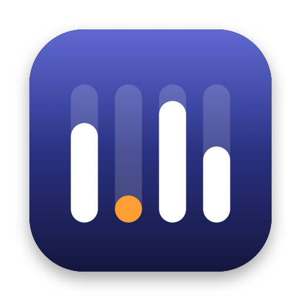
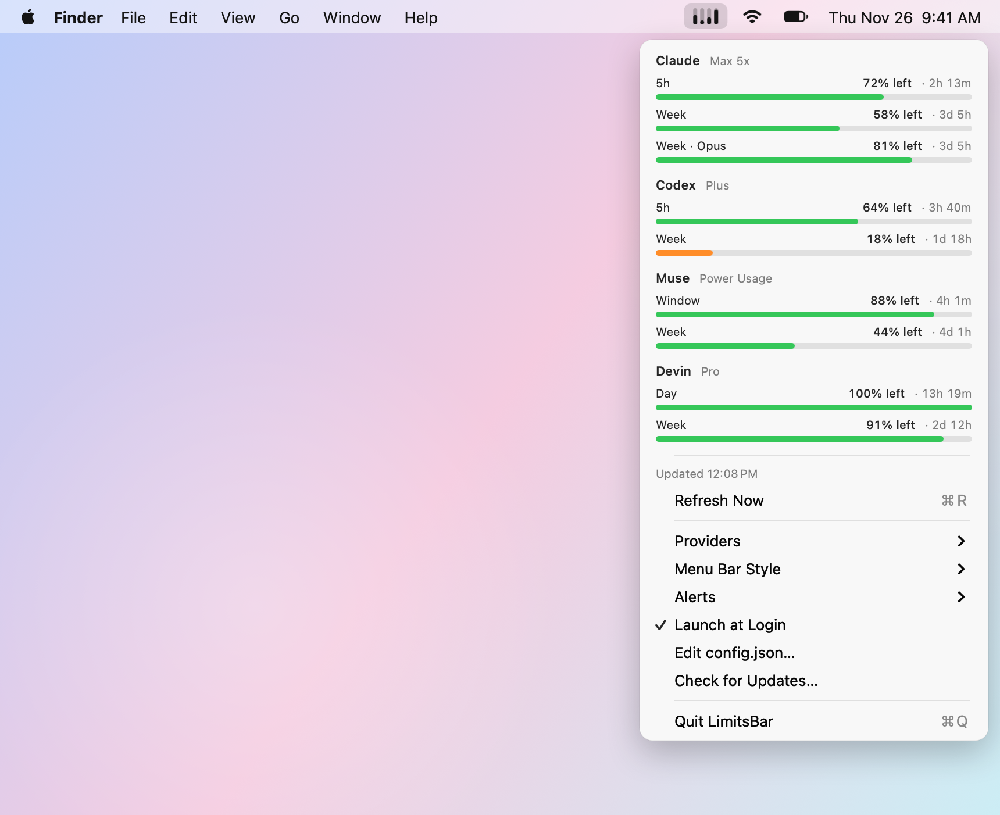
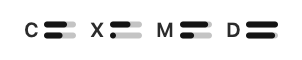
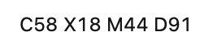
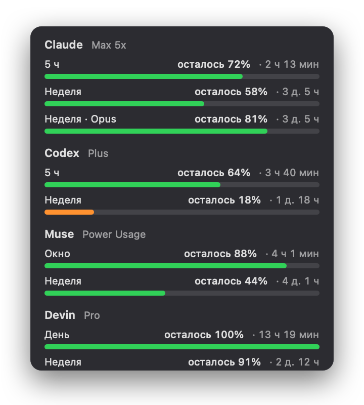
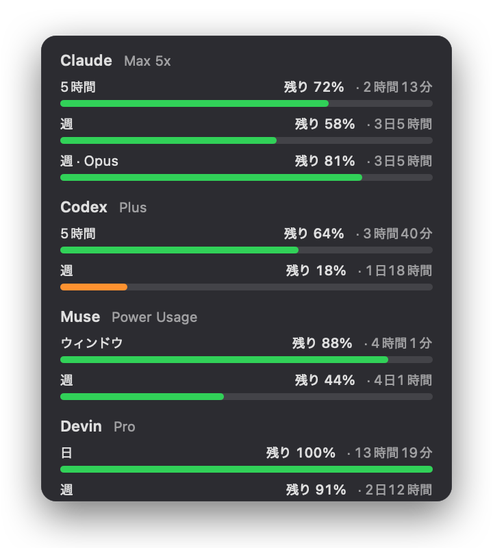
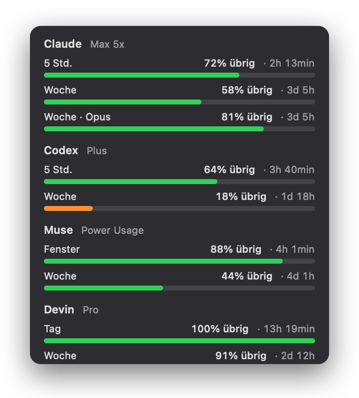

How much is left of your Claude, Codex, Gemini, Cursor, Copilot, Muse and Devin limits, always in the menu bar. With a heads-up before you run out.

One thin bar per service, filled to whatever is left of its tightest window. Four services take about 20 points of menu bar. Hover for the numbers, click for everything.
A level bar per service, in order: Claude, Codex, Muse, Devin, Gemini, Cursor, Copilot.

A letter and two bars: the short window on top, the tightest longer one below.

Plain percentages, if you'd rather read than glance.
No account, no setup. If a CLI is signed in on your Mac, LimitsBar picks it up; if it isn't, the service stays out of the way.
5-hour sessions, weekly caps, per-model limits and daily quotas, with time to reset.
A notification at 20% and 5% left, or levels you choose. Mute a window right from its alert.
Read locally, sent only to their own vendor, never refreshed, stored or logged.
Point it at a script that prints a little JSON, and your service shows up too.
New versions arrive through Sparkle, signed and notarized like the first one.
Ten languages, following your macOS settings.
Each alert fires once when a window crosses a level, then waits until that window resets.
Illustration of a LimitsBar notification
English, Русский, Українська, Deutsch, Français, Español, Português (Brasil), 日本語, 简体中文 and 한국어.



LimitsBar has no login of its own. It reads the credentials each CLI already keeps on your Mac and asks the same usage endpoint that CLI asks.
| Service | Reads | Asks |
|---|---|---|
| Claude Claude Code, Pro / Max / Team | Claude Code's keychain item | api.anthropic.com usage |
| Codex ChatGPT sign-in | ~/.codex/auth.json | chatgpt.com usage |
| Muse | nothing | runs muse usage --json |
| Devin Devin CLI | ~/.local/share/devin/credentials.toml | the server named in that file |
| Gemini Gemini CLI, Google sign-in | ~/.gemini/oauth_creds.json | cloudcode-pa.googleapis.com quota |
| Cursor Cursor app | Cursor's state database, read-only | cursor.com usage summary |
| Copilot GitHub Copilot | Copilot plugin login, or gh auth token | api.github.com Copilot quota |
It checks every 5 minutes, and when you open the menu if the numbers are more than two minutes old. If a vendor says "slow down" (HTTP 429), that service waits, longer each time, and keeps showing its last numbers. The endpoints are unofficial, so a vendor change can break one row; the others keep working.
Everything in the menu is saved to ~/.config/limits-bar/config.json. Edit it by hand if you like; it's re-read on every refresh.
Add a service LimitsBar doesn't know: any command that prints windows as JSON, with remainingPercent or usedPercent and an optional reset time. See the README and the example script.
{
"menuBar": "compact",
"disabled": ["devin"],
"alerts": {
"thresholds": [20, 5],
"muted": ["codex/Week"]
},
"custom": [{
"id": "openrouter", "name": "OpenRouter",
"command": ["~/bin/openrouter-credits"]
}]
}No. LimitsBar is an independent open-source project. It uses the same usage endpoints the official CLIs use, which aren't documented and may change.
Each service's token goes only to that service, to read your usage. The only other request is the update check against this project's GitHub releases. Nothing is collected.
Use that CLI once; it refreshes its own token and LimitsBar picks it up on the next check. LimitsBar never refreshes tokens itself, so it can't sign your CLI out.
Services whose CLI isn't signed in on this Mac are hidden. Check Providers in the menu, or add your own with a custom provider.
Allow notifications for LimitsBar in System Settings → Notifications. If they're off, Alerts in the menu has a shortcut there. Set the style to Alerts to keep them on screen.
Nothing. It's MIT-licensed and the source is on GitHub.